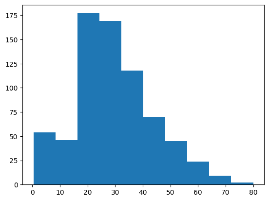
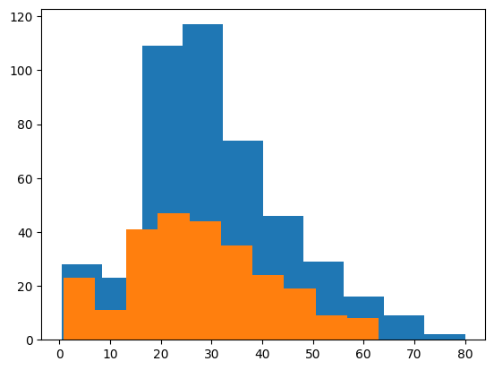
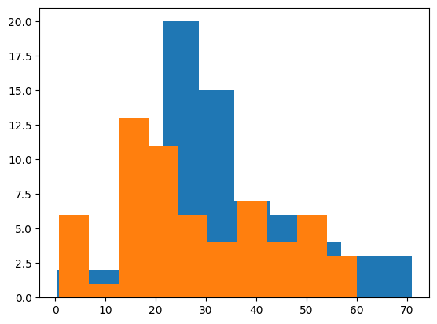
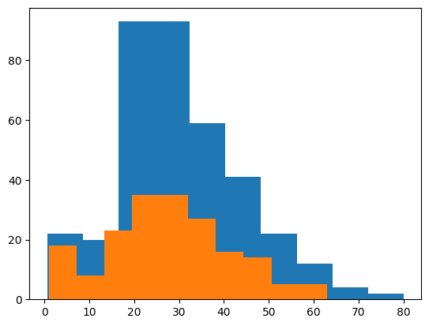
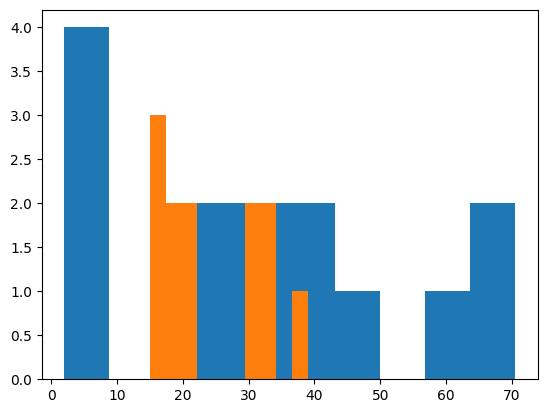

import pandas as pd
import numpy as np
import matplotlib.pyplot as plt11wk-2: [DataFrame] – 타이타닉, Pandas 문법 (1) // 숙제
1. 타이타닉
A. 영화

B. 데이터
- 데이터 불러오기
df = pd.read_csv("titanic.csv")
df| PassengerId | Survived | Pclass | Name | Sex | Age | SibSp | Parch | Ticket | Fare | Cabin | Embarked | |
|---|---|---|---|---|---|---|---|---|---|---|---|---|
| 0 | 1 | 0 | 3 | Braund, Mr. Owen Harris | male | 22.0 | 1 | 0 | A/5 21171 | 7.2500 | NaN | S |
| 1 | 2 | 1 | 1 | Cumings, Mrs. John Bradley (Florence Briggs Th... | female | 38.0 | 1 | 0 | PC 17599 | 71.2833 | C85 | C |
| 2 | 3 | 1 | 3 | Heikkinen, Miss. Laina | female | 26.0 | 0 | 0 | STON/O2. 3101282 | 7.9250 | NaN | S |
| 3 | 4 | 1 | 1 | Futrelle, Mrs. Jacques Heath (Lily May Peel) | female | 35.0 | 1 | 0 | 113803 | 53.1000 | C123 | S |
| 4 | 5 | 0 | 3 | Allen, Mr. William Henry | male | 35.0 | 0 | 0 | 373450 | 8.0500 | NaN | S |
| ... | ... | ... | ... | ... | ... | ... | ... | ... | ... | ... | ... | ... |
| 886 | 887 | 0 | 2 | Montvila, Rev. Juozas | male | 27.0 | 0 | 0 | 211536 | 13.0000 | NaN | S |
| 887 | 888 | 1 | 1 | Graham, Miss. Margaret Edith | female | 19.0 | 0 | 0 | 112053 | 30.0000 | B42 | S |
| 888 | 889 | 0 | 3 | Johnston, Miss. Catherine Helen "Carrie" | female | NaN | 1 | 2 | W./C. 6607 | 23.4500 | NaN | S |
| 889 | 890 | 1 | 1 | Behr, Mr. Karl Howell | male | 26.0 | 0 | 0 | 111369 | 30.0000 | C148 | C |
| 890 | 891 | 0 | 3 | Dooley, Mr. Patrick | male | 32.0 | 0 | 0 | 370376 | 7.7500 | NaN | Q |
891 rows × 12 columns
# 예제1 – 단순계산
(1) 전체 탑승객은 몇명인가?
len(df)891(2) 전체 탐승객중 몇명이 생존하였는가?
sum(list(df.Survived))342sum(df.Survived)342(3) 생존률을 구하라.
df.Survived.mean()np.float64(0.3838383838383838)(4) 탑승객중 남자는 몇명, 여자는 몇명인가?
list(df.Sex).count("male"), list(df.Sex).count("female")(577, 314)(5) 남자와 여자의 비율은?
list(df.Sex).count("male")/len(df), list(df.Sex).count("female")/len(df)(0.6475869809203143, 0.35241301907968575)(6) 탑승객이 탑승한 항구는 몇 종류인가? 종류별로 몇명의 승객이 탑승했는가?
set(df.Embarked){'C', 'Q', 'S', nan}list(df.Embarked).count("C"), list(df.Embarked).count("Q"), list(df.Embarked).count("S")(168, 77, 644)df.Embarked.value_counts()Embarked
S 644
C 168
Q 77
Name: count, dtype: int64#
# 예제2 – 그룹별 생존률
(1) 남녀의 생존률을 각각 구하고 비교하라.
df| PassengerId | Survived | Pclass | Name | Sex | Age | SibSp | Parch | Ticket | Fare | Cabin | Embarked | |
|---|---|---|---|---|---|---|---|---|---|---|---|---|
| 0 | 1 | 0 | 3 | Braund, Mr. Owen Harris | male | 22.0 | 1 | 0 | A/5 21171 | 7.2500 | NaN | S |
| 1 | 2 | 1 | 1 | Cumings, Mrs. John Bradley (Florence Briggs Th... | female | 38.0 | 1 | 0 | PC 17599 | 71.2833 | C85 | C |
| 2 | 3 | 1 | 3 | Heikkinen, Miss. Laina | female | 26.0 | 0 | 0 | STON/O2. 3101282 | 7.9250 | NaN | S |
| 3 | 4 | 1 | 1 | Futrelle, Mrs. Jacques Heath (Lily May Peel) | female | 35.0 | 1 | 0 | 113803 | 53.1000 | C123 | S |
| 4 | 5 | 0 | 3 | Allen, Mr. William Henry | male | 35.0 | 0 | 0 | 373450 | 8.0500 | NaN | S |
| ... | ... | ... | ... | ... | ... | ... | ... | ... | ... | ... | ... | ... |
| 886 | 887 | 0 | 2 | Montvila, Rev. Juozas | male | 27.0 | 0 | 0 | 211536 | 13.0000 | NaN | S |
| 887 | 888 | 1 | 1 | Graham, Miss. Margaret Edith | female | 19.0 | 0 | 0 | 112053 | 30.0000 | B42 | S |
| 888 | 889 | 0 | 3 | Johnston, Miss. Catherine Helen "Carrie" | female | NaN | 1 | 2 | W./C. 6607 | 23.4500 | NaN | S |
| 889 | 890 | 1 | 1 | Behr, Mr. Karl Howell | male | 26.0 | 0 | 0 | 111369 | 30.0000 | C148 | C |
| 890 | 891 | 0 | 3 | Dooley, Mr. Patrick | male | 32.0 | 0 | 0 | 370376 | 7.7500 | NaN | Q |
891 rows × 12 columns
(풀이1)
sex = list(df.Sex)
surv = np.array(list(df.Survived))surv[[l == "male" for l in sex]].mean()np.float64(0.18890814558058924)surv[[l == "female" for l in sex]].mean()np.float64(0.7420382165605095)(풀이2)
df.Survived[df.Sex == "male"].mean()np.float64(0.18890814558058924)df.Survived[df.Sex == "female"].mean()np.float64(0.7420382165605095)(2) 항구별 생존률을 각각 구하고 비교하라.
df.Survived[df.Embarked == "C"].mean()np.float64(0.5535714285714286)df.Survived[df.Embarked == "Q"].mean()np.float64(0.38961038961038963)df.Survived[df.Embarked == "S"].mean()
#df[df.Embarked == "S"].Survived.mean()np.float64(0.33695652173913043)(3) 항구별 Fare를 각각 구하고 비교하라.
df.Fare[df.Embarked == "C"].mean()np.float64(59.95414404761905)df.Fare[df.Embarked == "Q"].mean()np.float64(13.276029870129872)df.Fare[df.Embarked == "S"].mean()np.float64(27.079811801242233)#
# 예제3 – 시각화
(1) Age에 대한 히스토그램을 그려라.
plt.hist(df.Age);
(2) 성별로 Age에 대한 히스토그램을 그려라.
plt.hist(df[df.Sex == "male"].Age)
plt.hist(df[df.Sex == "female"].Age)(array([23., 11., 41., 47., 44., 35., 24., 19., 9., 8.]),
array([ 0.75 , 6.975, 13.2 , 19.425, 25.65 , 31.875, 38.1 , 44.325,
50.55 , 56.775, 63. ]),
<BarContainer object of 10 artists>)
(3) 항구별/성별로 Age에 대한 히스토그램을 그려라.
plt.hist(df[(df.Sex == "male") & (df.Embarked == "C")].Age)
plt.hist(df[(df.Sex == "female") & (df.Embarked == "C")].Age)(array([ 6., 1., 13., 11., 6., 4., 7., 4., 6., 3.]),
array([ 0.75 , 6.675, 12.6 , 18.525, 24.45 , 30.375, 36.3 , 42.225,
48.15 , 54.075, 60. ]),
<BarContainer object of 10 artists>)
plt.hist(df[(df.Sex == "male") & (df.Embarked == "S")].Age)
plt.hist(df[(df.Sex == "female") & (df.Embarked == "S")].Age)(array([18., 8., 23., 35., 35., 27., 16., 14., 5., 5.]),
array([ 1. , 7.2, 13.4, 19.6, 25.8, 32. , 38.2, 44.4, 50.6, 56.8, 63. ]),
<BarContainer object of 10 artists>)
plt.hist(df[(df.Sex == "male") & (df.Embarked == "Q")].Age)
plt.hist(df[(df.Sex == "female") & (df.Embarked == "Q")].Age)(array([3., 2., 2., 0., 0., 0., 2., 2., 0., 1.]),
array([15. , 17.4, 19.8, 22.2, 24.6, 27. , 29.4, 31.8, 34.2, 36.6, 39. ]),
<BarContainer object of 10 artists>)
#
# 예제4 – 그룹별 생존률
(1) 10세 미만 승객의 생존률을 구하라.
df[df.Age < 10].Survived.mean()np.float64(0.6129032258064516)(2) 20대 남자의 생존률을 구하라.
df[(df.Age > 20) & (df.Age < 30) & (df.Sex == "male")].Survived.mean()np.float64(0.16296296296296298)2. Pandas 행과열의선택
A. df 만들기
dct = {'date': ['12/30','12/31','01/01','01/02','01/03'], 'X1': [65,95,65,55,80], 'X2': [55,100,90,80,30], 'X3': [50,50,60,75,30], 'X4': [40,80,30,80,100]}
df = pd.DataFrame(dct)
df | date | X1 | X2 | X3 | X4 | |
|---|---|---|---|---|---|
| 0 | 12/30 | 65 | 55 | 50 | 40 |
| 1 | 12/31 | 95 | 100 | 50 | 80 |
| 2 | 01/01 | 65 | 90 | 60 | 30 |
| 3 | 01/02 | 55 | 80 | 75 | 80 |
| 4 | 01/03 | 80 | 30 | 30 | 100 |
B. 열의 선택
- 방법1 – df.
# df.X1 - 방법2 – df[]
# df['X1'] # str
# df[['X1']] # [str]
# df[['X1','X3']] # [str,str]- 방법3 – df.iloc
# df.iloc[:,0] # int
# df.iloc[:,-2:] # int:int - 슬라이싱
# df.iloc[:,1::2] # int:int - 스트라이딩
# df.iloc[:,[0]] # [int]
# df.iloc[:,[0,1]] # [int,int]
# df.iloc[:,[True,True,False,False]] # bool의 list
# df.iloc[:,range(2)] # range- 방법4 – df.loc
# df.loc[:,'X1'] # str
# df.loc[:,'X1':'X3'] # 'str':'str' -- 칼럼이름으로 슬라이싱 **
# df.loc[:,'X1'::2] # 'str':'str' -- 칼럼이름으로 스트라이딩 **
# df.loc[:,['X1']] # [str]
# df.loc[:,['X1','X4']] # [str,str]
# df.loc[:,[True,False,False,True,True]] # bool의 list수업때 헤맨 내용 재 설명 – 다음시간에 다시 설명할게요
자료형이 pandas.core.series.Series 인 경우와 pandas.core.frame.DataFrame 인 경우는 사용가능한 메소드가 다른 경우도 있으므로 조심해야함.
df = pd.read_csv("https://raw.githubusercontent.com/guebin/IAB2025-Play/refs/heads/main/content/titanic.csv")[:5]
df| PassengerId | Survived | Pclass | Name | Sex | Age | SibSp | Parch | Ticket | Fare | Cabin | Embarked | |
|---|---|---|---|---|---|---|---|---|---|---|---|---|
| 0 | 1 | 0 | 3 | Braund, Mr. Owen Harris | male | 22.0 | 1 | 0 | A/5 21171 | 7.2500 | NaN | S |
| 1 | 2 | 1 | 1 | Cumings, Mrs. John Bradley (Florence Briggs Th... | female | 38.0 | 1 | 0 | PC 17599 | 71.2833 | C85 | C |
| 2 | 3 | 1 | 3 | Heikkinen, Miss. Laina | female | 26.0 | 0 | 0 | STON/O2. 3101282 | 7.9250 | NaN | S |
| 3 | 4 | 1 | 1 | Futrelle, Mrs. Jacques Heath (Lily May Peel) | female | 35.0 | 1 | 0 | 113803 | 53.1000 | C123 | S |
| 4 | 5 | 0 | 3 | Allen, Mr. William Henry | male | 35.0 | 0 | 0 | 373450 | 8.0500 | NaN | S |
아래의 2개는 비슷해보이지만 약간 다를수 있음
df['Survived']0 0
1 1
2 1
3 1
4 0
Name: Survived, dtype: int64df[['Survived']]| Survived | |
|---|---|
| 0 | 0 |
| 1 | 1 |
| 2 | 1 |
| 3 | 1 |
| 4 | 0 |
# 예시1 – 비슷하게 동작하는 경우
df['Survived'].mean()np.float64(0.6)df[['Survived']].mean()Survived 0.6
dtype: float64#
# 예시2 – 비슷하게 동작하지 않는 경우
df[['Survived']].to_list()--------------------------------------------------------------------------- AttributeError Traceback (most recent call last) /tmp/ipykernel_498206/2135151720.py in ?() ----> 1 df[['Survived']].to_list() ~/anaconda3/envs/iab2025/lib/python3.13/site-packages/pandas/core/generic.py in ?(self, name) 6295 and name not in self._accessors 6296 and self._info_axis._can_hold_identifiers_and_holds_name(name) 6297 ): 6298 return self[name] -> 6299 return object.__getattribute__(self, name) AttributeError: 'DataFrame' object has no attribute 'to_list'
df['Survived'].to_list()[0, 1, 1, 1, 0]#
3. 숙제
df = pd.read_csv("titanic.csv")[:5]
df| PassengerId | Survived | Pclass | Name | Sex | Age | SibSp | Parch | Ticket | Fare | Cabin | Embarked | |
|---|---|---|---|---|---|---|---|---|---|---|---|---|
| 0 | 1 | 0 | 3 | Braund, Mr. Owen Harris | male | 22.0 | 1 | 0 | A/5 21171 | 7.2500 | NaN | S |
| 1 | 2 | 1 | 1 | Cumings, Mrs. John Bradley (Florence Briggs Th... | female | 38.0 | 1 | 0 | PC 17599 | 71.2833 | C85 | C |
| 2 | 3 | 1 | 3 | Heikkinen, Miss. Laina | female | 26.0 | 0 | 0 | STON/O2. 3101282 | 7.9250 | NaN | S |
| 3 | 4 | 1 | 1 | Futrelle, Mrs. Jacques Heath (Lily May Peel) | female | 35.0 | 1 | 0 | 113803 | 53.1000 | C123 | S |
| 4 | 5 | 0 | 3 | Allen, Mr. William Henry | male | 35.0 | 0 | 0 | 373450 | 8.0500 | NaN | S |
Survived, Sex, Age열을 출력하라.
#출력예시| Survived | Sex | Age | |
|---|---|---|---|
| 0 | 0 | male | 22.0 |
| 1 | 1 | female | 38.0 |
| 2 | 1 | female | 26.0 |
| 3 | 1 | female | 35.0 |
| 4 | 0 | male | 35.0 |